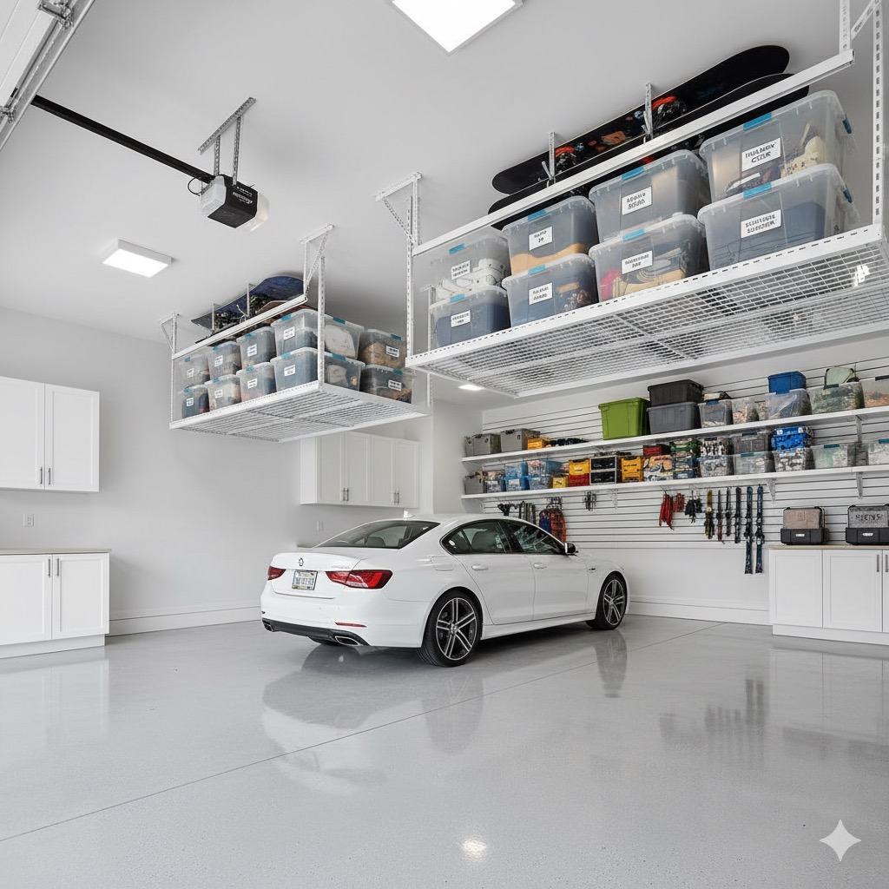
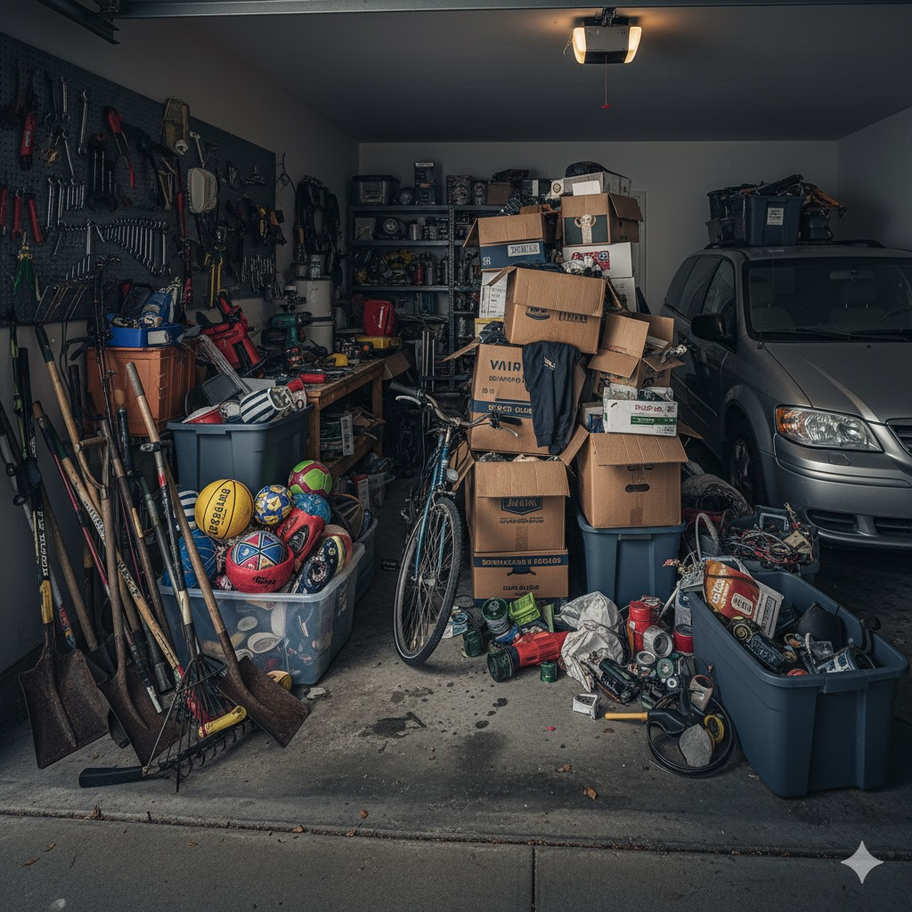
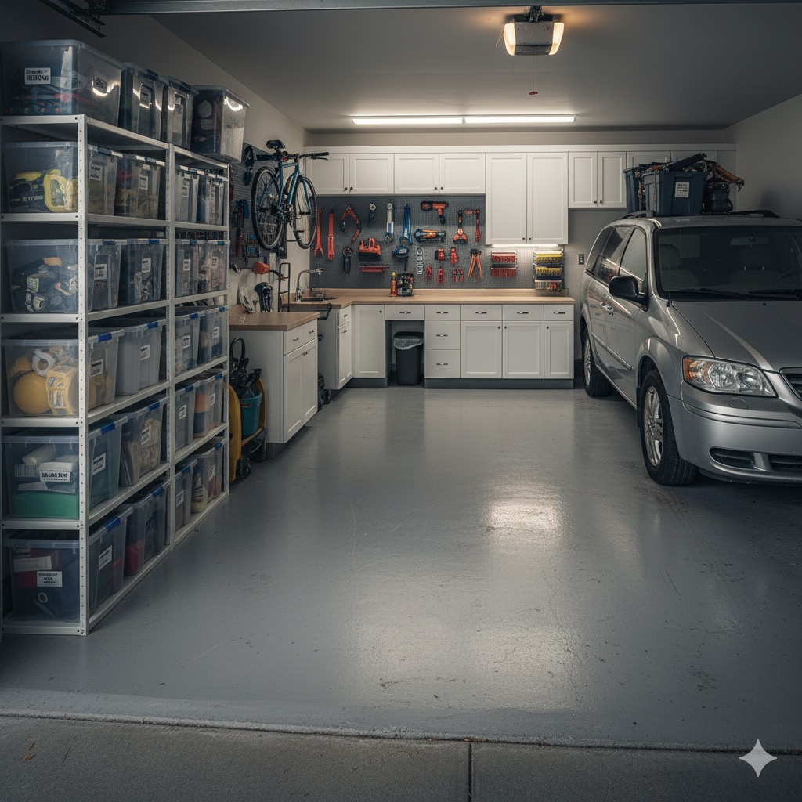
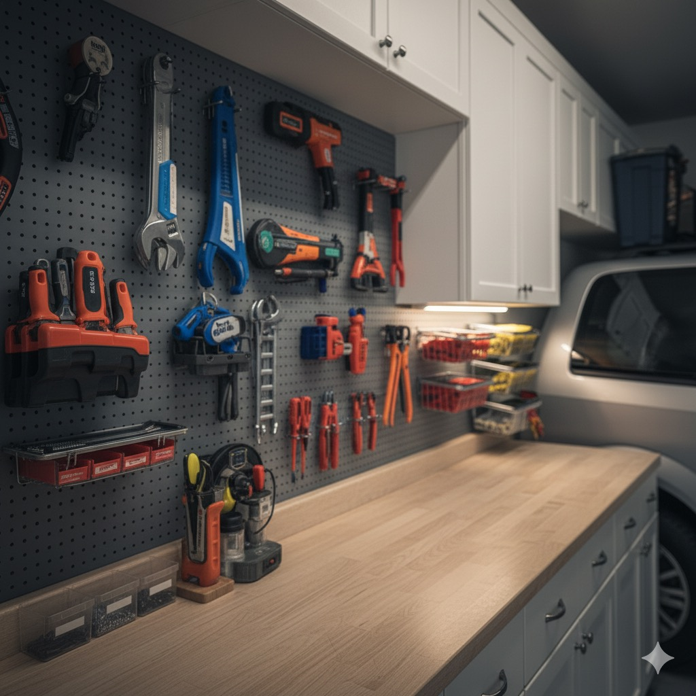
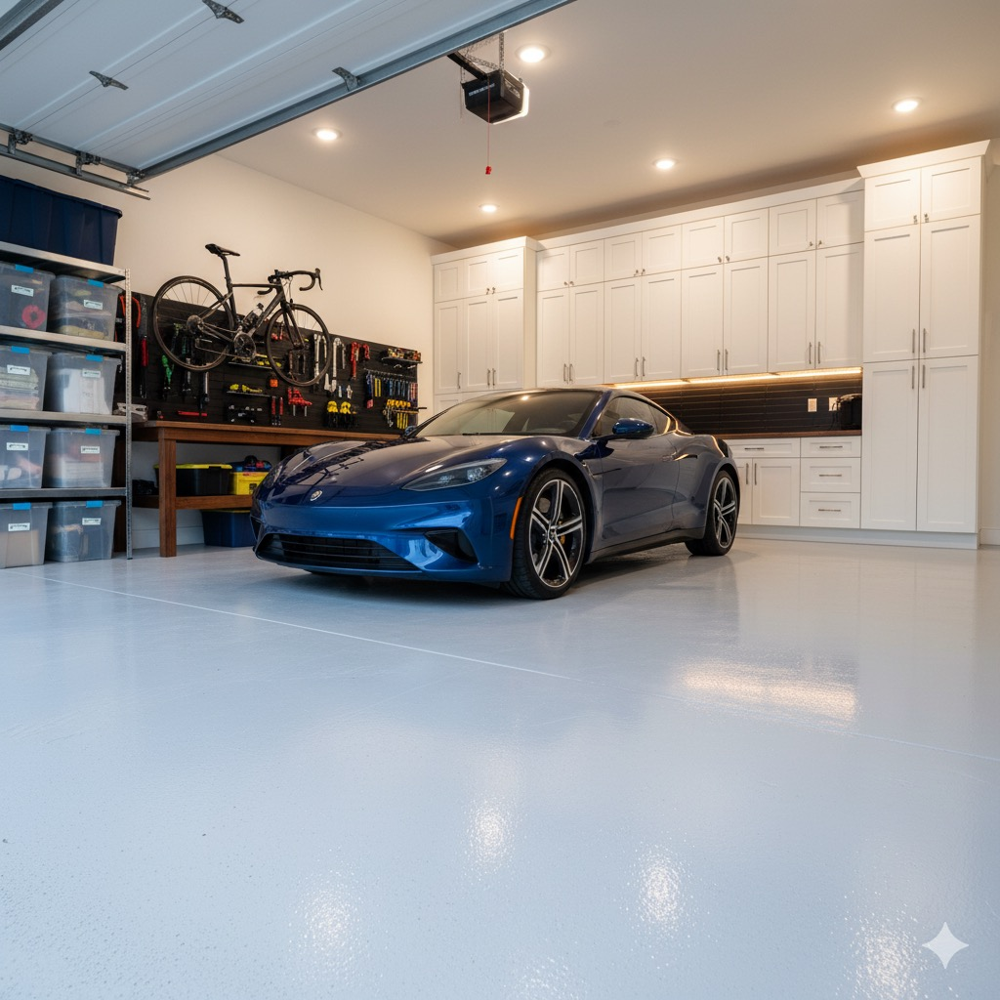

Carma Developments started turning farmland into Cranston in 1999, on the high ground where southeast Calgary drops toward Fish Creek Park and the Bow River. Stoney Trail runs along the north edge, Deerfoot Trail and Auburn Bay sit to the east, and the park and river wrap the west and south. The first phases are now more than twenty years old, Riverstone's walkout and river-backing lots came later, and most garages in between hold a family's bikes, rink gear, fishing rods and two sets of tires. We sort those garages, give each category a fixed home, and get the car back inside before the first cold snap.

The first Cranston homes went up in the early 2000s. Builder wire shelving from that period bows under bins and pulls out of drywall anchors, and twenty years of hockey seasons and birthdays have filled the corners. We start with a full sort, then replace what no longer holds weight.
Few Calgary communities sit this close to both a provincial park and a trout river. Rods, waders, bike trailers and pathway strollers come home wet or muddy and need somewhere to dry that is not the garage floor.
The residents' association runs Century Hall, with a gymnasium, a skating rink, tennis and basketball courts and a splash park. That means skates and sticks in winter, racquets and scooters in summer, and a garage that has to hold both seasons at once.
Almost every trip out of Cranston starts on Deerfoot Trail or Stoney Trail, and both carry salt and gravel from October to April. The brine that drips off the car lands on whatever is stored low, so we keep metal and cardboard off the slab.
The original part of the community, near Century Hall and Cranston Market, is mostly two-storey detached homes with a front-attached double garage. These are the garages we see most often: one bay for the car, one bay that slowly became storage, and a back wall of mismatched shelving. The fix is to move storage up and onto the walls so both bays can take a vehicle again, with tall shelving on the back wall and sports gear grouped on the side walls.
Cranston also has townhouse complexes, including Cardel townhomes and the Cranston Ridge area, where an attached single stall has to hold a car and everything else. Every square foot of wall counts. We use stud-mounted rails for bikes and yard tools, one or two overhead racks for seasonal bins, and a narrow shelf unit that leaves room to open the driver's door. Where a condo board sets rules about what can be mounted or stored, we plan inside them.
Riverstone, launched around 2012, holds the larger homes in Cranston, with oversized lots, escarpment and river-backing lots, and walkout designs. Triple garages tend to collect a second fridge, a workbench and sports gear alongside the cars. A third bay is valuable space, so we usually turn it into a defined zone (a workshop, a gear room or a vehicle bay with cabinets) instead of letting it fill with overflow.


Same garage, floor back in useAn illustration of the layout that suits most Upper Cranston front-attached doubles, not photos of a Cranston home: shelving across the back wall, gear on the side walls, and nothing on the floor between the car doors.
The Bow River below Cranston is a well-known fly-fishing stretch, and living a short walk from it means rods and waders get used often. Fly rods break when they lean in a corner, so we mount a ceiling or wall rod rack out of the way of the overhead door. Waders and boots go on open hooks with air on both sides, where they dry overnight. Zipped into a bag in the corner, they stay damp and start to smell within a week.
Cranston's pathways connect down into Fish Creek Provincial Park, so most households own one bike per person plus a trailer, a jogging stroller or both. Vertical hooks hold adult bikes on one wall, kids' bikes stay on low hooks they can reach themselves, and the trailer folds onto a pair of heavy wall brackets. That alone usually frees the space a second car needs.
Park trails and the river bank send gear home dirty. We keep one stretch of wall near the overhead door as a rinse-and-dry zone with a boot tray, a hose reel and hooks, so muddy things stop at the door instead of being carried through the garage to the house.
Text us photos of the garage or book a walkthrough. We note the garage size, ceiling height, door track, outlets and what the household stores there across a full year.
Every item goes into keep, donate, recycle or dispose. In a twenty-year-old Upper Cranston garage this is where outgrown skates, dried paint cans and duplicate tools come out.
We take donations and recycling off-site and handle household hazardous waste properly, so old paint and solvents stay out of your black cart.
We plan zones for the cars, river and pathway gear, rink gear, yard and snow equipment, tools and long-term storage, then pick shelving, wall systems, overhead racks or custom garage storage for each one.
Everything is installed, labelled and loaded, and we walk you through where each category lives so the system still works in February.
The Century Hall rink keeps skates, sticks and helmets in heavy rotation from the first hard freeze. A hockey bag left zipped in the corner stays wet for days, so we mount open hooks for pads and jerseys, a vented shelf for skates and a stick rack beside the house door. When the courts and splash park open, the same wall switches over to racquets, balls, scooters and pool bags.
Cranston children attend Cranston School, Dr. George Stanley School and Christ the King School close to home, then go on to Nelson Mandela High School or Bishop McNally High School. Backpacks, cleats, lunch bags and band instruments come in through the garage every afternoon. A labelled cubby row by the entry door gives each child one spot, and a high shelf above it holds outgrown gear waiting to be handed down.
Bike tune-ups, fly-tying, skate sharpening kits and the drill all need a surface. In many older Cranston garages there is already a bench, buried under bins. We clear it, add pegboard or slatwall above it and a task light, and keep the floor in front of it open.

Tools on the wall, bench clearEvery tool hangs where you can see it, so the bench stays a place to work. This illustration shows the pegboard-and-cabinet setup we install above most Cranston workbenches.
A chinook can lift Calgary from deep cold to above zero in an afternoon and drop it back overnight. Snow packed into the wheel wells melts across the slab, then freezes again. Cardboard on the floor soaks up that water and tears when you lift it, and tools left low start to rust. Shelving on legs, wall rails and overhead racks keep every stored item above the wet zone.
Winter tires, summer tires, the snowblower and the mower trade places every spring and fall. Each gets a permanent spot, usually a tire rack on a side wall and a floor bay near the overhead door for whichever machine is in season, so the changeover takes minutes instead of an afternoon of shuffling.
Two decades of Deerfoot brine pits bare concrete and leaves white rings where puddles dried. Owners who want a floor that wipes clean can add a sealed epoxy coating once the garage is organized. If the slab is stained now, start with our garage floor cleaning service.

A slab that sheds meltwaterA sealed floor with all storage lifted off the concrete is the most dependable defence against chinook meltwater and road brine in a southeast Calgary garage.
Plenty of Cranston's first owners raised families through the 2000s and 2010s. Their garages hold every size of bike and skate the kids went through. Teenagers with their own cars, or a move toward an empty nest, change what the garage needs to do. We sort outgrown gear into keep, hand down and donate before any new storage goes up.
Cranston is an active resale market, and buyers open the garage door at every showing. A sorted, swept garage with plain shelving photographs well. Our garage decluttering service handles the sort and removal, and a full garage cleaning gets it ready for listing photos.
Owners moving into one of the last Riverstone builds have the easiest job: install the system before the moving boxes arrive. On an empty slab we can fit wall rails, overhead racks and a drop zone in one visit, which costs less than retrofitting a full garage later.
From Upper Cranston and Cranston Ridge down to Riverstone on the edge of Fish Creek Park
Shelving, wall systems, overhead racks and cabinets, and how to choose between them.
A deep clean of walls, floor and shelving after the sort, or before a sale.
Our guide to the whole south side, from Lake Bonavista to the newest southeast communities.
New lake-community garages a few minutes east, with beach and skating gear in the mix.
Garage organization in Cranston starts at $199 for a standard garage. Larger garages, full clear-outs with removal, and custom cabinetry cost more depending on size and finish. We give a free, fixed written quote before any work begins, and a photo sent by text is usually enough to start.
Yes. Builder wire shelving from the early 2000s often bows under bins or pulls out of the drywall. We sort what is on it first, then replace it with shelving on legs, stud-mounted wall rails or overhead racks rated for what you actually store.
Rods go on a ceiling or wall rack away from the overhead door track, so they never lean in a corner. Waders and wading boots hang on open hooks with air on both sides so they dry overnight after an evening on the Bow.
Usually, yes. Wall rails and one or two overhead racks carry the storage, and a narrow shelf unit leaves room to open the driver's door. We keep the plan within any rules your condo board sets for the garage.
We give it one job. Most owners choose a workshop with a bench and cabinets, a gear room for bikes and river gear, or a clear vehicle bay. Giving the bay a purpose stops it filling with overflow.
Everything is lifted off the slab on shelving legs, wall rails and overhead racks, so meltwater and brine do not soak cardboard or rust tools. For a longer-term fix we can coordinate a sealed epoxy floor coating.
Yes. Open hooks for pads and jerseys, a vented skate shelf and a stick rack by the house door let gear dry between ice times instead of sitting wet in a bag.
Most organization and shelving projects take 4 to 8 hours in a single visit. A garage that needs a full clear-out first, or custom cabinetry, may take a second visit. We confirm the schedule in your free consultation.
Get your free consultation today. We will sort the garage, give the river, pathway and rink gear a home, and get the car back inside before the next chinook.
Call or text: photo quotes are perfect for busy Cranston households!
Cranston & Southeast Calgary
Plus Auburn Bay, Seton & McKenzie TowneThe fastest way: call or text a photo of your garage and we'll have a quote back to you the same day.
Call (587) 804-9266 Text Us a PhotoMon–Fri 8am–6pm · Sat 9am–4pm · texts answered evenings too